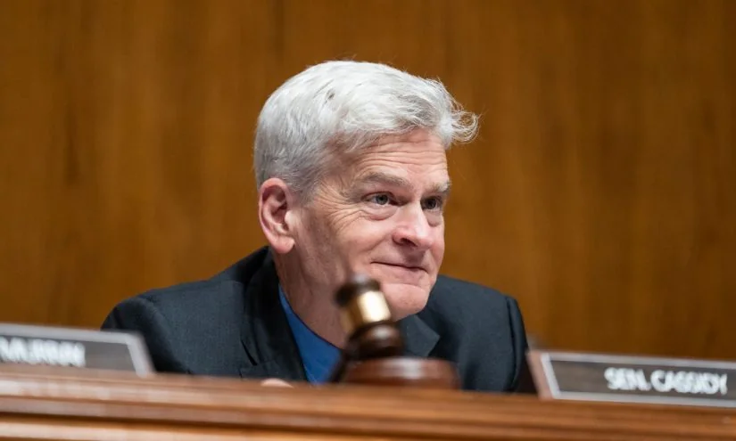

01
70余所高校共享对口支援经验，推动教育均衡发展
中国70余所院校齐聚一堂，分享高校对口支援的实践经验，旨在深化合作、促进区域教育均衡。
近日，一场汇聚相关数量余所高校的对口支援经验交流会在北京举行。各院校分享了在师资培训、学科建设、科研合作等方面的成功案例。对口支援是中国促进高等教育均衡发展的重要举措，东部发达地区高校通过结对帮扶中西部院校，提升其教学科研水平。此次会议进一步明确了未来合作方向，包括共建共享在线课程资源、联合培养研究生、以及推动科技成果转化。参与院校表示，对口支援不仅帮助受援高校提升了办学质量，也促进了支援高校自身的发展，形成了互利共赢的局面。教育部相关负责人强调，将继续完善对口支援机制，确保资源精准投放。
对口支援计划始于本年度，最初由教育部组织相关数量所东部高校对口支援西部高校。此后规模不断扩大，目前已覆盖数百所院校。支援形式包括教师互派、学生交流、课程共享、实验室共建等。例如，清华大学对口支援青海大学，帮助其建立了多个重点学科和科研平台；复旦大学对口支援新疆医科大学，提升了其医学教育水平。受援高校在学科建设、师资队伍和科研能力方面均有显著提升，部分高校甚至实现了从本科到博士点的跨越。
此次交流会还探讨了数字化转型背景下的新合作模式。多所高校提出共建在线课程平台，使中西部学生能够选修东部名校的优质课程。同时，联合培养研究生项目也受到关注，学生可在支援高校完成部分学业，获得双方学位。科技成果转化方面，支援高校帮助受援高校对接企业需求，推动技术落地。这些举措不仅提升了受援高校的办学实力，也促进了区域经济和社会发展。
对中西部地区学生而言，对口支援意味着更多优质课程和师资资源。学生可以关注所在高校是否参与对口项目，主动利用共享课程和联合培养机会。例如，通过在线平台选修支援高校的精品课程，或申请交换生项目。此外，学生还可以参与科研合作项目，积累实践经验。家长也可以鼓励孩子关注这些机会，拓宽视野。
伊恩的观察
对中西部地区学生而言，对口支援意味着更多优质课程和师资资源。建议关注所在高校是否参与对口项目，主动利用共享课程和联合培养机会。
02
内蒙古各级各类学校语言文字规范化达标率100%
内蒙古自治区宣布所有学校已实现语言文字规范化达标创建，标志着普通话推广和规范汉字书写取得阶段性成果。
内蒙古自治区教育厅近日宣布，全区各级各类学校语言文字规范化达标创建率达到相关比例。这意味着从幼儿园到大学，所有学校在校园用语、教学语言和文字书写方面均达到国家规范标准。该成果得益于近年来持续推行的教师普通话培训、语言文字督导评估以及校园文化建设。内蒙古作为多民族聚居区，在推广国家通用语言文字的同时，也注重保护少数民族语言文化。达标创建并非简单的一刀切，而是鼓励学校根据实际情况制定实施方案。部分学校还开展了“双语”教学试点，既保证学生掌握国家通用语言，又保留民族语言特色。家长普遍反映，孩子普通话水平提高后，升学就业选择面更广。
语言文字规范化达标创建是内蒙古教育系统的一项长期工作。自本年度起，自治区教育厅启动达标校建设，要求学校在校园环境、课堂教学、师生交流等环节使用规范汉字和普通话。教师需通过普通话水平测试，达到相应等级。学校还需定期开展语言文字活动，如朗诵比赛、书法课等。评估采用学校自评、盟市复核、自治区抽查的方式，确保达标质量。截至本年度7月，全区所有学校均通过验收。
在推广普通话的同时，内蒙古也注重保护蒙古语等少数民族语言。部分学校实行“双语”教学，即用蒙古语授课的同时加强普通话教学。自治区还设立了民族语言授课学校，确保少数民族学生能够学习本民族语言文字。家长可以根据孩子情况选择双语学校或普通学校。普通话能力的提升确实为学生带来了更多机会，尤其是在升学考试和就业市场中。
对家长而言，孩子普通话能力提升有助于未来升学就业。建议在家中也鼓励使用普通话交流，同时尊重民族语言传承，可让孩子参加双语活动。家长还可以关注学校是否提供普通话辅导资源，帮助孩子提高口语表达。
伊恩的观察
对家长而言，孩子普通话能力提升有助于未来升学就业。建议在家中也鼓励使用普通话交流，同时尊重民族语言传承，可让孩子参加双语活动。
03
北京特殊教育学校达20所，实现各区十五年制全覆盖
北京市特殊教育学校数量增至20所，各区均建成十五年制特殊教育学校，为残疾儿童提供从学前到高中的连续教育。
北京市教委最新数据显示，全市特殊教育学校已达到20所，实现了各区十五年制特殊教育学校全覆盖。这意味着从学前到高中，每个区都有专门学校为视力、听力、智力、自闭症等残疾儿童提供连续教育。此外，普通学校也逐步配备资源教室和特教教师，推行融合教育。北京市还建立了特殊教育支持中心，为有特殊需求的学生提供评估、康复和转衔服务。家长可申请教育评估，根据孩子情况选择特教学校或普通学校随班就读。政策强调“一人一案”，确保每个孩子获得个性化教育方案。下一步，北京将加强特教师资培训，提升教学质量。
十五年制特殊教育学校是指覆盖学前教育、义务教育（小学和初中）和高中教育的特殊教育学校。此前，北京部分区缺少高中阶段的特教学校，学生完成义务教育后升学选择有限。如今，每个区至少有一所十五年制特教学校，学生可以在同一学校完成从学前到高中的全部学业，减少了转学带来的适应困难。这些学校根据残疾类别设置不同班级，配备专业教师和康复设施。例如，盲校提供盲文教学和定向行走训练，聋校提供手语教学和听力康复，培智学校则侧重生活自理和职业技能培养。
除了特教学校，北京市还大力推进融合教育。普通学校需配备资源教室，为随班就读的残疾学生提供个别化辅导。特教教师定期到普通学校巡回指导，帮助教师调整教学策略。特殊教育支持中心则提供评估、咨询和转介服务，家长可以带孩子到中心进行教育评估，制定个别化教育计划。转衔服务帮助学生从学校过渡到社会，包括职业培训和就业支持。
对有特殊需求孩子的家庭，北京各区十五年制特教学校全覆盖意味着就近入学成为可能。家长可以主动联系区特教中心，获取评估和安置指导。建议家长了解孩子的具体需求，与学校合作制定教育计划。同时，关注融合教育政策，如果孩子适合随班就读，可以申请普通学校的资源教室支持。
伊恩的观察
对有特殊需求孩子的家庭，北京各区十五年制特教学校全覆盖意味着就近入学成为可能。建议家长主动联系区特教中心，获取评估和安置指导。
04
美国参议院委员会通过法案阻止教育部拆分
参议院教育委员会通过立法，旨在推翻特朗普政府拆分教育部的努力，保留K-12和特殊教育服务等核心职能。

美国参议院教育委员会以跨党派投票通过了一项法案，旨在阻止特朗普政府拆分教育部的计划。该法案将K-12教育监督、残疾学生服务以及中学后教育办公室保留在教育部内，而非转移至劳工部或其他机构。缅因州共和党参议员苏珊·柯林斯与阿拉斯加州共和党参议员丽莎·穆尔科斯基共同发起该法案，她们认为《第一条款》和《残疾人教育法案》等标志性教育项目应留在国会指定的教育部。此前，教育部长琳达·麦克马洪已开始将部分办公室转移至其他部门，引发两党议员的反弹。该法案是国会迄今为止对拆分计划最强烈的反对，但能否在众议院通过仍存变数。支持者认为集中管理有助于保障弱势群体权益，反对者则主张地方分权更高效。
特朗普政府拆分教育部的计划始于去年，其核心逻辑是将联邦教育职能分散至劳工部、卫生与公众服务部等部门，以减少联邦对地方教育的干预。支持拆分的人认为，教育部自1979年成立以来并未显著提升学生成绩，反而增加了官僚负担。然而，批评者指出，教育部负责管理多项关键项目，包括为低收入学校提供资金的《第一条款》、保障残疾学生权益的《残疾人教育法案》、以及联邦学生贷款和助学金项目。拆分可能导致这些项目的协调困难，尤其对弱势群体造成冲击。
参议院委员会的法案明确将《第一条款》和《残疾人教育法案》的监督权留在教育部，确保这些项目的连续性和问责制。此外，法案还保留了中学后教育办公室，避免学生贷款和高等教育政策被并入劳工部。柯林斯参议员强调，这些项目是国会精心设计的，旨在确保教育机会公平，拆分将破坏这一目标。穆尔科斯基参议员则指出，阿拉斯加等偏远州依赖联邦教育资金，拆分可能影响资金分配效率。
该法案在委员会以两党多数通过，但众议院共和党领导层尚未表态。部分众议院共和党人支持拆分，认为这是减少联邦浪费的举措。然而，教育倡导组织警告，拆分将导致政策碎片化，增加家长和学生的困惑。对普通家庭而言，教育部职能稳定意味着特殊教育服务和联邦资助项目的连续性更有保障。若孩子有特殊教育需求，家长可关注联邦政策变动对本地服务的影响，并与学校保持沟通，确保孩子获得应有的支持。
伊恩的观察
对普通家庭而言，教育部职能稳定意味着特殊教育服务和联邦资助项目的连续性更有保障。若孩子有特殊教育需求，可关注联邦政策变动对本地服务的影响。
05
美国参议院推进阅读科学法案：两党合作应对读写危机
一项要求各州采用基于证据的阅读教学法才能获得联邦资助的法案在参议院委员会获得两党支持，旨在解决全国性读写危机。
美国参议院健康、教育、劳工和养老金委员会近日以两党合作方式推进了《阅读法案》（READ Act）。该法案将修改联邦综合识字州发展拨款计划，要求各州在课堂中仅使用基于科学研究的阅读教学方法，才有资格获得数百万美元的资助。委员会主席、路易斯安那州共和党参议员比尔·卡西迪表示，许多有能力的学生仅仅因为从未被教会阅读而辍学，这项立法旨在通过强化循证教学来应对全国读写危机。法案还包含针对阅读障碍学生的专门条款，要求各州在教师培训和早期筛查中纳入相关科学方法。此前众议院已通过类似版本，但参议院版本在保留州灵活性方面有所调整。该法案获得教育研究组织和家长团体的广泛支持，但也引发部分学区对联邦过度干预的担忧。
阅读科学（Science of Reading）是一个跨学科研究领域，整合了认知心理学、神经科学和语言学的研究成果，揭示了人类如何学习阅读以及哪些教学方法最有效。其核心原则包括语音意识、拼读法、流利度、词汇和理解策略。法案要求各州在申请联邦拨款时，必须证明其采用的阅读教学材料和方法符合这些循证标准。对于教师培训，法案规定各州需确保教师候选人掌握阅读科学知识，并通过相关认证考试。早期筛查方面，法案鼓励幼儿园至二年级学生每年接受阅读技能评估，以便及早发现阅读困难并干预。
该法案的推进背景是美国长期存在的读写危机。根据美国国家教育进展评估，约三分之二的四年级学生阅读水平未达到熟练标准，其中低收入家庭和少数族裔学生比例更高。许多教育专家认为，部分学校仍在采用未经科学验证的教学方法，如“全语言教学法”，导致学生缺乏系统性的拼读训练。法案支持者认为，联邦层面的强制要求将推动各州统一教学标准，减少地区差异。反对者则担心联邦干预会限制地方教育自主权，且部分农村学区可能因资源不足难以达标。
对家长而言，法案若最终通过，意味着孩子所在学校可能更早进行阅读障碍筛查，并采用更科学的阅读教学法。家长可以主动了解本地学区是否调整阅读课程，询问学校是否使用基于语音教学的材料，并关注孩子的阅读进展。如果孩子出现阅读困难，家长可以要求学校提供早期干预服务。此外，家长也可以在家中使用语音游戏和分级读物辅助孩子学习。
伊恩的观察
对家长而言，这意味着未来孩子所在学校可能更早筛查阅读障碍，并采用更科学的阅读教学法。建议关注本地学区是否调整阅读课程，主动了解学校是否采用循证教学材料。
无障碍文字记录
伊恩 你好，欢迎收听今天的《伊恩每日·教育》。今天是2026年7月31日。我想先问你一个问题：当你看教育新闻时，有没有一种感觉——政策离你的孩子、你的课堂、你的学习，好像隔着一层玻璃？看得见，摸不着。今天我们就来打破这层玻璃。我会带你从五条新闻出发，把它们翻译成你可以用的方法。准备好了吗？我们开始。
伊恩 今天上午，新浪财经报道了一则消息：70余所高校齐聚一堂，分享对口支援的结对共建经验。这听起来像是一场常规的交流会，但仔细想想，它传递的信号远比表面丰富。
对口支援不是新概念。过去几十年，东部高校向中西部派出教师、捐赠设备、联合培养学生，本质上是一种“输血”。但这次70所院校坐下来，不是汇报成绩，而是分享“如何让支援真正落地”的经验。这意味着，政策正在从“给资源”转向“建机制”。
谁受影响？最直接的当然是中西部高校的学生和老师。他们能通过联合课程、远程教学、教师进修等方式，接触到更前沿的知识和教学方法。比如，新疆大学的学生可以同步听到清华的《人工智能导论》，贵州的医学老师能到上海中山医院跟诊半年。这些机会，过去可能只属于少数“精英项目”，现在正通过制度化安排覆盖更多人。
但受益的不只是中西部。东部高校的学生，在交流中会看到更真实的中国。一位参加过对口支援的上海大学生告诉我，他在云南支教时，发现当地孩子对自然科学的兴趣远超想象，但实验器材匮乏。回来后，他发起了一个“科学盒子”募捐项目，把中学实验室淘汰的器材寄过去。这种体验，是课本给不了的。
误区在哪里？很多人觉得对口支援是“单方面付出”，东部高校吃亏。但真正的走深走实，是双向成长。比如，东部高校的医学生去西部实习，面对的病种更复杂、医疗条件更有限，临床决策能力反而提升更快。再比如，东部高校的管理者学习如何用更少的资源办更多的事——这种能力，在经费充裕时反而练不出来。
那么，普通人可以做什么？如果你是一名大学生，可以主动申请跨校交流项目。很多对口支援高校都有交换生计划，甚至提供交通和生活补贴。如果你是一名家长，可以鼓励孩子报考有对口支援合作的院校——那里有更多资源流动，比如联合培养、双学位项目。如果你是一名教育工作者，可以关注本校的对口支援需求，哪怕只是开放一门在线课程，也是一种参与。
长期来看，对口支援的真正价值，是缩小教育资源的区域差距。但要注意，支援不能变成“依赖”。中西部高校需要建立自己的“造血”能力，比如通过联合科研培育本土团队，而不是永远等着东部送课。公平不是平均分配，而是让每个地方都有机会长出属于自己的教育生态。
今天这条新闻，看似是高校间的内部事务，但它关乎每一个家庭的教育选择。当资源开始流动，机会就不再被地理位置锁死。
听众 伊恩你好，我是西部一所普通二本的学生。我们学校好像没什么对口支援项目，感觉很失落。我该怎么办？
伊恩 别失落。对口支援不只是学校层面的协议。很多东部高校的公开课、讲座、科研训练营都是线上开放的。你可以去查Coursera、中国大学MOOC，或者关注目标高校的教务处公众号。主动联系教授做远程助研，也是可行的。记住，资源是活的，你得伸手去够。
伊恩 今天看到一条新闻：内蒙古各级各类学校语言文字规范化达标创建率达到100%。这个数字来自新浪财经，说的是内蒙古所有学校——从城市到牧区——在普通话和规范汉字教学上都达到了统一标准。
这意味着什么？语言是学习的门槛。如果一个孩子从小说的方言或民族语言和课堂语言不一样，他在起跑线上就得多花力气去“翻译”。内蒙古地广人稀，牧区孩子可能接触普通话的机会更少。现在达标率100%，至少保证了每个学校都有规范的普通话教学环境。这对教育公平是实质性的推进——门槛降低了，后面的路才好走。
但这里有一个常见的误区：达标不等于消灭母语。政策要求的是“规范化”，不是“单一化”。事实上，内蒙古很多学校同时开设蒙语课，实行双语教育。所以，如果你担心孩子的方言或民族语言被削弱，可以主动和学校沟通双语课程设置。家长也可以在家创造多语言环境——比如日常用方言交流，陪孩子读蒙文绘本，同时鼓励孩子用普通话分享学校见闻。这样既能跟上课堂，又能保留文化根脉。
从长期看，语言规范化的真正价值在于连接。当孩子们能用同一种语言顺畅交流、获取信息，他们未来的选择空间就更大。而多元语言能力，反而会成为他们的独特优势。
所以，这条新闻不是“一刀切”的信号，而是一个提醒：在规范与多元之间找到平衡，需要学校、家庭和社会的共同努力。
伊恩 今天北京有一则消息，可能很多家长没有注意到，但它对一部分家庭来说，是实实在在的改变。北京的特殊教育学校已经达到20所，而且各区都实现了十五年制特殊教育学校的全覆盖。这意味着，从学前到高中，每一个有特殊需要的孩子，都能在自己所在的区找到一条完整的教育通道。
十五年制，指的是从幼儿园到高中，特教学校提供一贯制的教育服务。以前，很多特需孩子的家长要跨区送孩子上学，路上奔波几个小时是常事。现在，每个区至少有一所这样的学校，孩子可以在家门口接受教育。
谁最直接受益？当然是特需儿童的家庭。他们不再需要为了一个学位四处搬家，也不用每天花大量时间在路上。孩子可以更稳定地学习，家长也能有更多精力关注孩子的成长。
但这件事的影响不止于此。特教学校的增加，其实也在倒逼普通学校变得更包容。因为特教资源越充足，就越有能力支持“随班就读”——就是让有轻度障碍的孩子在普通班级里学习。过去，很多普通学校不敢接收特需孩子，是因为没有专业支持。现在，特教中心可以派出资源教师，帮助普通学校设计个别化教育方案。
这里有一个容易被忽略的代价：特教学校的建设需要大量专业教师和康复设施，如果师资培养跟不上，学校可能只是“有壳无核”。所以，家长在选择时，要关注学校的师资配置和课程设置，而不仅仅是“有学上”。
对于普通孩子的家长，这件事也是一个教育契机。你可以和孩子聊聊“不同”与“尊重”。比如，为什么有些小朋友需要特殊的帮助？我们怎么和他们相处？这比任何说教都更能培养孩子的同理心。
如果你身边有特需孩子的家长，可以告诉他们这个信息，并建议他们尽早联系区特教中心做评估。评估越早，孩子越能获得合适的支持。教育公平，不是让所有孩子都一样，而是让每个孩子都能得到他需要的帮助。
听众 伊恩，我孩子今年上小学，班里有个自闭症同学。老师总让我们多包容，但孩子学习受影响怎么办？
伊恩 你的担心很正常。但包容和学习不是非此即彼。首先，老师有责任管理课堂秩序，如果特需孩子的行为干扰教学，学校应该配备助教或资源教室。你可以向家委会或学校建议。其次，你的孩子可以从中学到同理心和解决问题的能力，这是未来社会的重要素养。具体行动：和孩子一起读关于神经多样性的绘本，比如《不一样也没关系》；同时，如果课堂确实受影响，可以和老师协商调整座位或分组方式。
伊恩 今天来聊一条来自美国的新闻。7月30日，美国参议院健康、教育、劳工和养老金委员会通过了一项法案，旨在阻止特朗普政府拆分教育部的计划。这个法案的核心是：保持教育部对K-12基础教育以及残障学生服务的监管权，同时不让劳工部接管高等教育办公室。
先补充一下背景。去年，特朗普政府开始将教育部的多个办公室迁移到其他部门，比如把高等教育办公室划给劳工部，试图逐步拆解这个联邦机构。而这次参议院委员会的法案，是对这一行动最有力的反击。法案由共和党参议员苏珊·柯林斯、丽莎·穆尔科斯基和民主党参议员蒂姆·凯恩联合提出，获得了跨党派支持。
谁受影响？最直接的是全美约5000万公立学校学生和700万接受特殊教育的学生。如果教育部被拆分，两个关键项目可能被削弱：一是Title I，即向低收入学区提供额外资金的计划；二是《残障人士教育法案》（IDEA），它保障残障学生获得免费且合适的公立教育。这两个项目目前都由教育部统一监管，如果分散到不同部门，协调和执行效率可能下降，资金也可能被挪用。
但法案只是第一步。接下来它需要经过参议院全体投票和众议院审议，而众议院目前由共和党主导，此前已经投票支持拆分教育部。所以最终结果仍有变数。
这件事给我们什么启示？教育部的存在，本质上是为了公平兜底。没有中央层面的监管，各州之间的教育差距可能拉大——富裕州可以自己投入更多，而贫困州的学生可能失去联邦支持。反观国内，我们的教育部在推动均衡发展上作用显著，比如今天新闻里提到的“高校对口支援”和“北京特殊教育学校全覆盖”，都是中央统筹的成果。所以，珍惜并监督好我们的教育政策，让公平的底线不被突破。
伊恩 今天我们来聊一条来自美国的新闻：美国参议院健康、教育、劳工和养老金委员会以两党支持的方式，通过了《READ法案》和一项针对阅读障碍的法案。根据The 74的报道，这项法案的核心是：各州如果想获得联邦“综合读写州发展拨款”——这笔钱高达数亿美元——就必须在课堂上采用基于“阅读科学”的教学方法。什么是阅读科学？简单说，就是经过严格实证研究证明有效的阅读教学方式，比如系统性的自然拼读法、语音意识训练、流利度练习、词汇和阅读理解策略。
谁受影响？最直接的是全美数百万阅读困难的学生，尤其是患有阅读障碍的儿童。阅读障碍是一种神经生物学差异，表现为识字慢、朗读跳行、拼写困难，但智力完全正常。很多家长和老师误以为孩子“笨”或“不努力”，这其实是最大的误区。科学证明，阅读障碍需要专门的教学方法，而阅读科学正是针对这些孩子的有效工具。
这项法案的意义在于，它把联邦拨款和循证教学挂钩，迫使各州和学区放弃那些缺乏科学依据的“平衡读写”或“全语言”教学法。代价是什么？一些习惯了旧方法的教师需要重新培训，教材需要更换，短期内会有阵痛。但对于普通家庭来说，这是好事——你的孩子更有可能在学校里接受到真正有效的阅读指导。
对国内家长有什么启发？第一，如果孩子识字慢、朗读跳行，尽早做阅读障碍筛查，国内很多医院儿科可以评估；第二，在家坚持每天15分钟拼读游戏，而不是死记硬背；第三，向学校建议采用循证阅读教材。阅读是学习的基础，别让孩子因为方法不当而掉队。
听众 伊恩，我孩子二年级，认字很慢，老师建议多读多写。但我怕方法不对反而让他厌学，你有什么具体建议？
伊恩 多读多写没错，但方法很重要。首先，排除阅读障碍可能——如果孩子认字慢但听故事理解力强，可能是视觉处理问题。其次，用“多感官教学”：让孩子用手指在空中写字母，同时念出声音，再在纸上写。每天15分钟，比一次写一小时有效。第三，选他感兴趣的书，哪怕只有图，先建立阅读信心。你可以搜一下“结构化读写教学”，很多资源免费。别急，阅读是长跑，方法对，孩子会追上来的。
伊恩 好，我们来串一下今天的五条新闻。高校对口支援、语言文字规范化、特殊教育全覆盖、美国教育部存废、阅读科学法案——它们都指向同一个主题：教育公平与科学方法。公平不是平均，而是给每个孩子适合他的支持；科学不是口号，而是可操作的步骤。无论你是学生、家长还是教育者，都可以从今天起做一件事：查一查你所在地区有没有对口支援项目、特教资源或者阅读筛查服务。主动一步，公平就近一步。
伊恩 今天的节目就到这里。如果你有任何教育困惑，欢迎在评论区留言，我会在后续节目里回应。记住，教育不是一场速成的比赛，而是一片需要耐心耕耘的田野。我是伊恩，我们明天见。